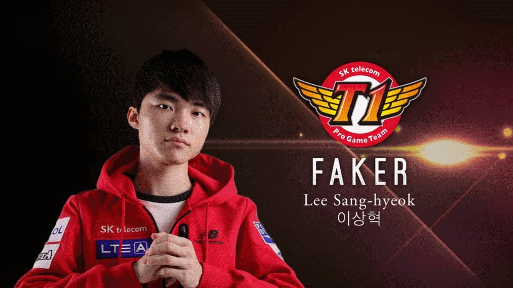

SK Telecom T1 K (often abbreviated as SKT T1 K) is a Korean League of Legends team competing at top-level OnGameNet (OGN) tournaments in South Korea. During OLYMPUS Champions Spring 2013, the team was given the nickname "Judgement Day" by DoA and MonteCristo to differentiate the team from their sister team SK Telecom T1 S, which they nicknamed "Terminator". The overarching organization, SK Telecom T1, was founded in 2004 and sponsors teams on several gaming platforms, starting its League of Legends team in December 2012. From its beginnings as a team with strong individual skills that heavily focused on skirmishes, SK Telecom T1 K has grown to become a dominant, global powerhouse. The team's crowning achievement has been its victory at the Season 3 World Championship against Royal Club. The team now is part of the full SK Telecom T1 team, formed by this team and their sister team, SK Telecom T1 S.
Lee Sang-hyeok (Korean: 이상혁, born May 7, 1996), known by his in-game name Faker (Korean: 페이커), is a South Korean professional League of Legends player. Formerly known as "GoJeonPa" (Korean: 고전파) on the Korean server, he was picked up by SK Telecom in 2013 and is currently the mid laner for SK Telecom T1, which competes in the League of Legends Champions Korea.[1] Faker is renowned for his high mechanical skill at the game and is considered by many to be the best League of Legends player of all time. He is consistently ranked number one by analysts and is often referred to as the "God" of League of Legends. He is one of only two players, along with teammate Bengi, to have won the League of Legends World Championship thrice, having done so in the 2013, 2015 and 2016 Seasons. He has also won the Mid-Season Invitational tournament in 2016, placing second in 2015. As of the end of October 2016, Faker has won $896,596 in prize money, and is ranked #29 in prize money won across all esports.
Faker was born in Seoul on May 7, 1996. He and his brother were raised by their grandparents and their father, Lee Kyung-joon in Gangseo District, Seoul. Faker always loved puzzles and video games, including custom maps on Warcraft III and the MOBA "Chaos". He discovered League of Legends in late 2011, and quickly became very good at the game. He dropped out of high school in order to join SK
Faker is widely considered to be the best LoL player in the world.[4][5] In October 2013 Faker won the League of Legends World Championship as a member of SK Telecom T1 K. SKT K and SKT S merged in 2014 and Faker became a member of a consolidated SKT T1. SKT T1 failed to qualify for League of Legends World Championship 2014. In November 2014 it was reported that Faker had declined contract offers from several Chinese companies including one offer of ₩500 million for streaming.In League of Legends, there are characters known as "champions", and Faker is renowned as having one of the largest "champion pools" (number of champions in a player's arsenal that the player has mastered). He is best known for his LeBlanc, Zed, Cassiopeia, Ryze and Yasuo. Many former top Korean players, including Samsung Galaxy's members Pawn, Dandy and Imp, left South Korea to play in China, Faker on the other hand declined an offer of over $1,000,000 by a Chinese Team. Imp reported in a Reddit Ask Me Anything (AMA) that his salary was larger than $200,000 a year without any specifics as to how much.[citation needed] If this remains true, then it is speculated that Faker might be making notably more than any of the offers from Chinese teams. It is speculated Faker has made more than $1,000,000 in his pro-gaming career. Faker opened the 2015 Spring LCK split by getting benched by the team and then coming back for a pentakill against NaJin e-mFire. In the 2015 World Championship, he and his team won while only dropping one game in the finals for a record of 15–1 throughout the series. Faker and his team started off the 2016 Season by winning the LoL Champions Korea Spring Split. By winning the 2016 LCK Spring Split, SKT T1 was guaranteed a place in the 2016 Mid-Season Invitational.At that point in time MSI was also the only major tournament they had yet to win. They were heavily favored coming into the tournament, but were initially unable to perform up to their usual standards. Their sudden loss in form resulted in SKT T1 unexpectedly losing several games in the group stages. However, they managed to turn things around during the elimination round and eventually clinched the title by sweeping the North American team - Counter Logic Gaming - in the finals. SKT got third in the 2016 Summer League of Legends Champions Korea, but still qualified for the 2016 League of Legends World Championship through circuit points. The team eventually won the 2016 championship in a match against Samsung Galaxy, in which Faker was voted as the Most Valuable Player.